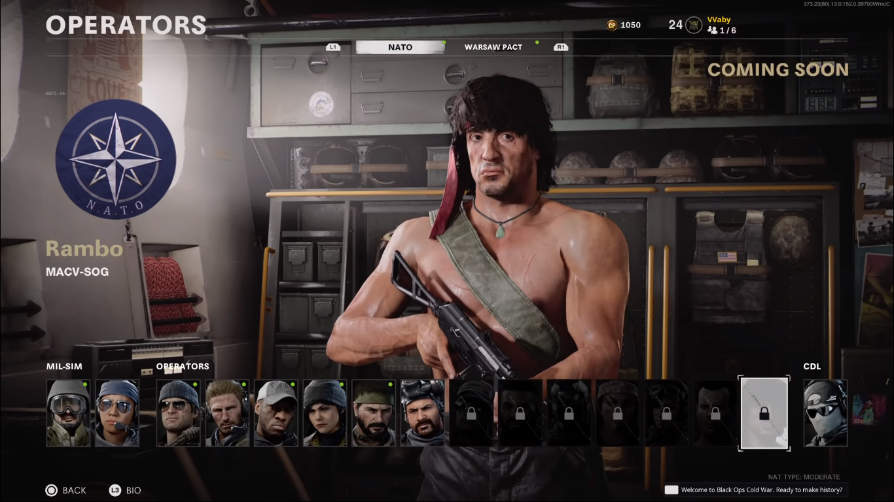

| Inicio | Loja |
|
| Inicio | Loja |
postado em -3/02/2040 - 52:42
Dois dos maiores astros de ação dos anos 1980, Sylvester Stallone e Bruce Willis acabaram por contracenar juntos pela primeira apenas em 2010, no filme ‘Os Mercenários’. Agora, dois dos personagens mais famosos vividos pelos atores vão dividir a mesma tela em todos os títulos atuais da franquia Call of Duty. O evento ‘Heróis de Ação dos anos 80’, que reúne Rambo e John McClane, tem início no dia 20 de maio.
Diferentemente de um ação recente em CoD que trouxe personagens de ‘O Massacre da Serra Elétrica’ e de ‘Jogos Mortais’ em um evento de Halloween, Rambo e McLane não serão skins. Ambos os personagens chegam como operadores inéditos em três títulos da série: ‘Call of Duty: Warzone’, ‘Black Ops Cold War’ e ‘Call of Duty: Mobile’.
Rambo poderá ser adquirido no pacote de mesmo nome nas lojas de ‘Call of Duty: Warzone’ e ‘Black Ops Cold War’. O conteúdo reúne, além do operador lendário, dois golpes finalizadores, sendo um com seu famoso arco e flecha; três projetos de armas lendárias (um fuzil de assalto, ML e uma faca).
Já o pacote ‘Duro de Matar’ disponibiliza John McClane em ‘Call of Duty: Warzone’ e ‘Black Ops Cold War’. O operador lendário vem com golpe finalizador, projetos de armas lendários (fuzil tático, SMT e fuzil de assalto).
Os pacotes dos dois personagens incluem, ainda, um cartão de visitas e emblema lendários, um relógio épico e um pingente de arma épico. O conteúdo poderá ser adquirido nas lojas a partir da 1h do dia 20 de maio e fica disponível até 1h do dia 19 de junho.